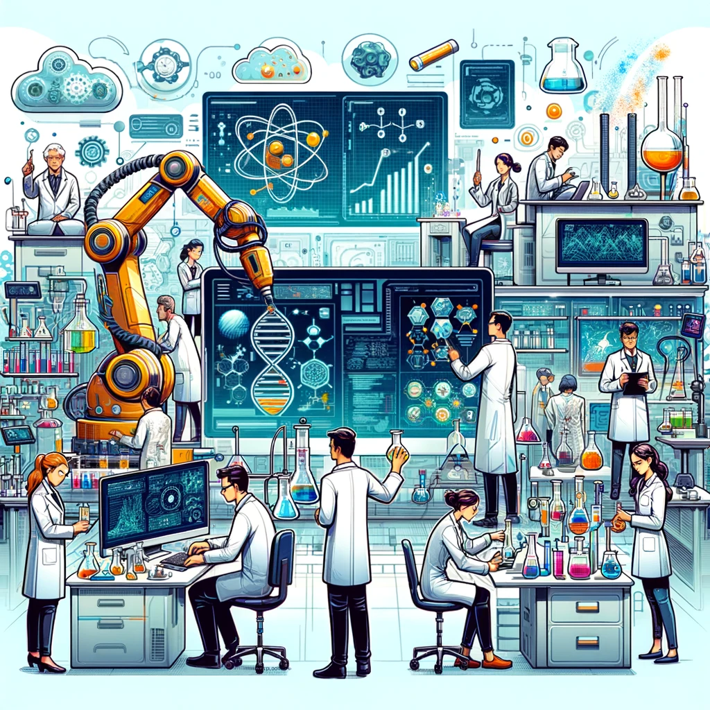

What is technology?
Technology is the advance in humanity's evolution.With technology comes AI. AI and technology comes hand in hand and it is the main reason why our lives are easy.
It makes communication and collecting information way easier.
The feature of technology is that it will always improve or in other words keep advancing. Not just that but it uses metals or minerals that are sturdy,melleable(can be easily shaped)and is a conducter for electricity.Technology uses energy and be made for different purpose.These are some few features of technology. .
| Advantages | Disadvantages |
|---|---|
| makes life easier | increases dependency which leads to unemployment |
| improves efficiency | expensive |
| Easy communication | addiction |
These are some merits and demerits of technology.
